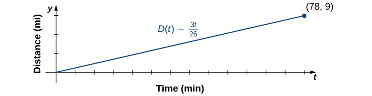

Section 1.4 Basic Classes of Functions: Part A, Lines
Learning Objectives.
Calculate the slope of a linear function and interpret its meaning.
Learn how to find the equation of a line in point-slope and slope-intercept form.
We have studied the general characteristics of functions, so now let's examine some specific classes of functions. We begin by reviewing the basic properties of linear functions. Then in the next section we look at quadratic functions, and then generalize to include higher-degree polynomials. By combining root functions with polynomials, we can define general algebraic functions and distinguish them from the transcendental functions we examine later in this chapter. We finish the section with examples of piecewise-defined functions and take a look at how to sketch the graph of a function that has been shifted, stretched, or reflected from its initial form. Note: This is the first half of section 1.2 in the original form of OpenStax Calculus.
Subsection 1.4.1 Linear Functions and Slope
The easiest type of function to consider is a linear function. Linear functions have the form \(f(x)=ax+b,\) where \(a\) and \(b\) are constants. In Figure 1.56, we see examples of linear functions when \(a\) is positive, negative, and zero. Note that if \(a\gt 0 ,\) the graph of the line rises as \(x\) increases. In other words, \(f(x)=ax+b\) is increasing on \((-\infty,\infty).\) If \(a\lt 0 ,\) the graph of the line falls as \(x\) increases. In this case, \(f(x)=ax+b\) is decreasing on \((-\infty,\infty).\) If \(a= 0 ,\) the line is horizontal.
!["An image of a graph. The y axis runs from -2 to 5 and the x axis runs from -2 to 5. The graph is of the 3 functions. The first function is “f(x) = 3x + 1”, which is an increasing straight line with an x intercept at ((-1/3), 0) and a y intercept at (0, 1). The second function is “g(x) = 2”, which is a horizontal line with a y intercept at (0, 2) and no x intercept. The third function is “h(x) = (-1/2)x”, which is a decreasing straight line with an x intercept and y intercept both at the origin. The function f(x) is increasing at a higher rate than the function h(x) is decreasing."](external/CNX_Calc_Figure_01_02_001.jpg)
As suggested by Figure 1.56, the graph of any linear function is a line. One of the distinguishing features of a line is its slope. The slope is the change in \(y\) for each unit change in \(x.\) The slope measures both the steepness and the direction of a line. If the slope is positive, the line points upward when moving from left to right. If the slope is negative, the line points downward when moving from left to right. If the slope is zero, the line is horizontal. To calculate the slope of a line, we need to determine the ratio of the change in \(y\) versus the change in \(x.\) To do so, we choose any two points \((x_1,y_1)\) and \((x_2,y_2)\) on the line and calculate \(\frac{y_2−y_1}{x_2−x_1}.\) In Figure 1.57, we see this ratio is independent of the points chosen.
!["An image of a graph. The y axis runs from -1 to 10 and the x axis runs from -1 to 6. The graph is of a function that is an increasing straight line. There are four points labeled on the function at (1, 1), (2, 3), (3, 5), and (5, 9). There is a dotted horizontal line from the labeled function point (1, 1) to the unlabeled point (3, 1) which is not on the function, and then dotted vertical line from the unlabeled point (3, 1), which is not on the function, to the labeled function point (3, 5). These two dotted have the label “(y2 - y1)/(x2 - x1) = (5 -1)/(3 - 1) = 2”. There is a dotted horizontal line from the labeled function point (2, 3) to the unlabeled point (5, 3) which is not on the function, and then dotted vertical line from the unlabeled point (5, 3), which is not on the function, to the labeled function point (5, 9). These two dotted have the label “(y2 - y1)/(x2 - x1) = (9 -3)/(5 - 2) = 2”.">](external/CNX_Calc_Figure_01_02_021.jpg)
Definition 1.58.
Consider line \(L\) passing through points \((x_1,y_1)\) and \((x_2,y_2).\) Let \(\Delta y=y_2−y_1\) and \(\Delta x=x_2−x_1\) denote the changes in \(y\) and \(x,\) respectively. The slope of the line is
We now examine the relationship between slope and the formula for a linear function. Consider the linear function given by the formula \(f(x)=ax+b.\) As discussed earlier, we know the graph of a linear function is given by a line. We can use our definition of slope to calculate the slope of this line. As shown, we can determine the slope by calculating \((y_2−y_1) /(x_2−x_1)\) for any points \((x_1,y_1)\) and \((x_2,y_2)\) on the line. Evaluating the function \(f\) at \(x= 0 ,\) we see that \(( 0 ,b)\) is a point on this line. Evaluating this function at \(x= 1 ,\) we see that \(( 1 ,a+b)\) is also a point on this line. Therefore, the slope of this line is
We have shown that the coefficient \(a\) is the slope of the line. We can conclude that the formula \(f(x)=ax+b\) describes a line with slope \(a.\) Furthermore, because this line intersects the \(y\)-axis at the point \(( 0 ,b),\) we see that the \(y\)-intercept for this linear function is \(( 0 ,b).\) We conclude that the formula \(f(x)=ax+b\) tells us the slope, \(a,\) and the \(y\)-intercept, \(( 0 ,b),\) for this line. Since we often use the symbol \(m \) to denote the slope of a line, we can write
to denote the slope-intercept form of a linear function.
Sometimes it is convenient to express a linear function in different ways. For example, suppose the graph of a linear function passes through the point \((x_1,y_1)\) and the slope of the line is \(m.\) Since any other point \((x,f(x))\) on the graph of \(f\) must satisfy the equation
this linear function can be expressed by writing
We call this equation the point-slope equation for that linear function.
Since every nonvertical line is the graph of a linear function, the points on a nonvertical line can be described using the slope-intercept or point-slope equations. However, a vertical line does not represent the graph of a function and cannot be expressed in either of these forms. Instead, a vertical line is described by the equation \(x=k\) for some constant \(k.\) Since neither the slope-intercept form nor the point-slope form allows for vertical lines, we use the notation
where \(a,b\) are both not zero, to denote the standard form of a line.
Definition 1.59.
Consider a line passing through the point \((x_1,y_1)\) with slope \(m.\) The equation
is the point-slope equation for that line.
Consider a line with slope \(m\) and \(y\)-intercept \(( 0 ,b).\) The equation
is an equation for that line in slope-intercept form.
The standard form of a line is given by the equation
where \(a\) and \(b\) are both not zero. This form is more general because it allows for a vertical line, \(x=k.\)
Example 1.60. Finding the Slope and Equations of Lines.
Consider the line passing through the points \(( 11 , −4 )\) and \(( −4 , 5 ),\) as shown in Figure 1.61.
Find the slope of the line.
Find an equation for this linear function in point-slope form.
Find an equation for this linear function in slope-intercept form.
The slope of the line is
\begin{equation*} m=\frac{y_2−y_1}{x_2−x_1}=\frac{ 5 −( −4 )}{−4 − 11}= \frac{ 9 }{-15 }=− \frac{ 3 }{ 5 }. \end{equation*}To find an equation for the linear function in point-slope form, use the slope \(m= −3 / 5 \) and choose any point on the line. If we choose the point \(( 11 , −4 ),\) we get the equation
\begin{equation*} f(x)+ 4 =− \frac{ 3 }{ 5 }(x− 11 ). \end{equation*}To find an equation for the linear function in slope-intercept form, solve the equation in part b. for \(f(x).\) When we do this, we get the equation
\begin{equation*} f(x)=− \frac{ 3}{ 5 }x+ \frac{ 13}{ 5 }. \end{equation*}
Checkpoint 1.62.
Consider the line passing through points \(( −3 , 2 )\) and \(( 1 , 4 ).\) Find the slope of the line.
Find an equation of that line in point-slope form. Find an equation of that line in slope-intercept form.
Example 1.63. A Linear Distance Function.
Jessica leaves her house at 5:50 a.m. and goes for a 9-mile run. She returns to her house at 7:08 a.m. Answer the following questions, assuming Jessica runs at a constant pace.
Describe the distance \(D\) (in miles) Jessica runs as a linear function of her run time \(t\) (in minutes).
Sketch a graph of \(D.\)
Interpret the meaning of the slope.
At time \(t= 0 ,\) Jessica is at her house, so \(D( 0 )= 0 .\) At time \(t= 78 \) minutes, Jessica has finished running \(9 \) mi, so \(D( 78 )= 9 .\) The slope of the linear function is
\begin{equation*} m= \frac{ 9 − 0 }{ 78 − 0 }=\frac{ 3 }{ 26 }. \end{equation*}The \(y\)-intercept is \(( 0 , 0 ),\) so the equation for this linear function is\begin{equation*} D(t)=\frac{ 3 }{ 26 }t. \end{equation*}- To graph \(D,\) use the fact that the graph passes through the origin and has slope \(m= 3 / 26 .\) 
The slope \(m= 3 / 26 ≈ 0.115 \) describes the distance (in miles) Jessica runs per minute, or her average velocity.
Subsection 1.4.2 Key Concepts
A line is a function with constant slope.
There are two common forms for writing the equation of a line. They are point-slope form and slope-intercept form. There is also the less commonly used standard form of a line.
Subsection 1.4.3 Key Equations
Point-slope equation of a line \(y−y_1=m(x−x_1)\)
Slope-intercept form of a line \(y=mx+b\)
Standard form of a line \(ax+by=c\)
This book is a custom edition based on OpenStax Calculus Volume 1. You can download the original for free at https://openstax.org/details/books/calculus-volume-1. 1
Additional practice exercises are available in at the bottom on this section in OpenStax Calculus Volume 1: https://openstax.org/books/calculus-volume-1/pages/1-1-review-of-functions
https://openstax.org/details/books/calculus-volume-1